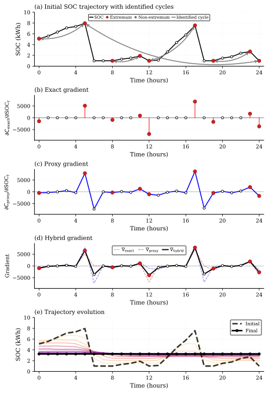
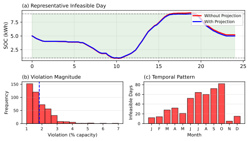
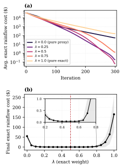

IEEE Transactions on Smart Grid Early Access · 2026
End-to-End Battery Dispatch with Exact Rainflow Degradation via Mixed-Integer Differentiable Predictive Control
1 Environmental Health and Engineering, Johns Hopkins University
2 Civil and Systems Engineering, Johns Hopkins University
3 Electrical and Biomedical Engineering, University of Nevada, Reno
Learn to accelerate battery dispatch while accounting for the cost of its cycles. A neural policy selects operating modes and power levels from demand, solar, and price forecasts. Training evaluates rainflow degradation directly and combines sparse cycle-extrema gradients with a dense proxy signal.


The dispatch problem
Buying electricity at lower prices and discharging at higher prices can reduce a household’s energy bill. But cycling also wears the battery. Two schedules with similar energy throughput can incur different degradation because cycle depth matters.
Rainflow counting identifies full and half cycles in an irregular state-of-charge (SOC) trajectory. Its discrete cycle-pairing operations complicate gradient-based learning. Mixed-integer differentiable predictive control (MI-DPC) keeps that forward cost calculation while supplying a custom backward signal.
The study considers independent, grid-connected residential batteries with rooftop solar: a 24-hour schedule at 15-minute resolution, or 96 dispatch intervals. SOC is expressed as stored energy in kWh.
Energy cost + cycle degradation
Cycle depths \(\delta_i\) and counts \(n_i\) come from rainflow; \(R\) is replacement cost and \(\eta_{\mathrm{dis}}\) is discharge efficiency. The paper uses a Li-NMC stress law. Charge/discharge limits, mode exclusivity, battery dynamics, grid balance, SOC bounds, and a terminal SOC target define the scheduling problem.
Formulation: paper Sections II-A–B, Equations (1)–(4). The forward implementation’s half-cycle convention is described in Section III-C7.
From forecasts to a trainable dispatch policy
The graphical abstract follows the computational path below. Offline training uses the scheduling objective itself, without requiring optimal dispatch labels. At deployment, the trained network predicts a schedule and an optional quadratic-program (QP) filter adjusts its continuous powers.
Encode the forecasts
Normalize solar generation, demand, purchase price, and the buy–sell price spread. A shared multilayer encoder feeds separate mode and power heads over the full horizon.
Select modes and bound power
A straight-through Gumbel–Softmax estimator supplies one-hot charge, discharge, or idle decisions during training. Sigmoid power outputs are scaled by the power limit and gated by the chosen mode. Inference uses discrete mode selection.
Unroll the physical calculation
Compute SOC from the battery dynamics and derive import/export from net grid power. Evaluate energy cost and rainflow cycle cost on the resulting trajectory. Dynamics and power balance are explicit computations.
Backpropagate and update
Combine gradients at identified cycle extrema with a proxy gradient based on adjacent SOC changes. Backpropagate through the dynamics and policy, together with SOC-bound and terminal penalties. Repeat over training batches.
The hybrid backward signal
The sparse term differentiates the cost associated with identified cycle extrema; the proxy distributes a signal across incremental SOC changes. The paper uses \(\lambda=0.5\). The mixture is a training estimator, not the exact derivative of the entire rainflow mapping.
The self-supervised loss
A curriculum decreases the degradation weight while the categorical temperature is annealed. SOC-bound and terminal penalties guide learning; they do not by themselves guarantee feasibility for every forecast.
Algorithm 1 and Sections III-C–F; hybrid gradient Equation (25), loss Equation (19). The tilde marks the hybrid estimator here; the paper writes it as a backward derivative.


A projection at inference
The paper’s filter minimizes the squared change to predicted charge and discharge powers. It keeps the selected modes fixed and imposes linear battery dynamics, power limits, the initial SOC, and SOC bounds. If the initial SOC lies within its bounds, zero power is feasible; the stated QP then has a unique solution.
This result applies to the constraints in the projection formulation. Its Equations (30)–(31) do not include the original scheduling problem’s terminal equality. The released notebook also uses a different projection implementation; see the resource notes below.
Results across residential battery profiles
The paper evaluates simulated dispatch using metered rooftop-solar and demand profiles from 10 residential batteries over 365 days, spanning SDG&E, Xcel Energy, and APS tariffs. The main reference is a piecewise-linear (PWL) degradation mixed-integer linear program solved with Gurobi; its schedules are evaluated using rainflow cost.
Total-cost gap versus PWLFleet-wide training, with projection, over 3,650 battery-days.
Total inference timeVersus 35,011 s for PWL; the paper reports a 564× speedup.
Days reported feasibleObserved for the fleet-trained policy, with or without projection.
Table III. Fleet-wide training uses all 3,650 scenarios and reports performance on that fleet; this is not an established held-out fleet test. The PWL reference is a benchmark, so these are performance gaps, not certified gaps to the global optimum.
What broader training changes
| Method / training | Total cost ($) | Gap vs. PWL | Feasible days | Time (s) |
|---|---|---|---|---|
| PWL / Gurobi | 16,000 | 0.00% | 3,650 | 35,011 |
| Single battery, no projection | 17,810 | +11.31% | 3,193 | 52.7 |
| Single battery + projection | 17,804 | +11.27% | 3,650 | 485 |
| Fleet-wide, no projection | 16,533 | +3.33% | 3,650 | 21.9 |
| Fleet-wide + projection | 16,533 | +3.33% | 3,650 | 62.0 |
A policy trained on one SDG&E customer incurs a larger gap when evaluated across the full fleet. Exposing training to the broader set of profiles lowers the reported gap. Projection repairs the reported SOC violations from the single-customer policy while making only small changes to its total cost.
- Battery and horizon
- 10 kWh; 4.8 kW power limit; 92% efficiency; SOC bounds 10–90%; 96 intervals per day.
- Timing conditions
- Intel Core Ultra 7 155H CPU, 16 GB RAM; batch size 1; Gurobi 13.0 on the same machine. Fleet times sum the per-instance solves.
- Offline training
- Approximately 8.5 hours on one NVIDIA Tesla T4 GPU (16 GB), separate from inference timing.
- Statistical scope
- Reported aggregate costs and timings for this dataset. The tables do not provide confidence intervals or repeated-run uncertainty.


Why the rainflow training objective matters
On 10 held-out synthetic test days, changing the training objective while retaining the MI-DPC architecture changes the cost–wear trade-off. The exact-rainflow-trained policy has a smaller reported gap than its PWL-trained counterpart. The comparison below keeps projection enabled for both.
| Method | Energy cost ($) | Degradation ($) | Gap vs. PWL | Time / day (s) | Feasible |
|---|---|---|---|---|---|
| PWL / Gurobi | 28.55 | 0.58 | 0.00% | 9.42 | 10/10 |
| MI-DPC-PWL + projection | 31.35 | 0.15 | +8.14% | 0.019 | 10/10 |
| MI-DPC + projection | 29.01 | 0.62 | +1.74% | 0.041 | 10/10 |
Costs and per-instance timings as reported in Table I; same CPU and batch-size-1 setup as above. Table I also includes throughput, differential evolution, and reinforcement-learning baselines. Rounded source values are retained without recomputing the reported gaps.


Scope and interpretation
- Model-based dispatch on real traces. These results use measured customer profiles in scheduling experiments. They do not establish a physical closed-loop battery deployment.
- Exact forward cost, approximate training signal. “Exact rainflow” identifies the cycle-counting objective. The hybrid backward estimator and learned policy do not imply globally optimal dispatch.
- Feasibility has a defined scope. Architectural constraints, soft training penalties, and the projection QP play different roles. The QP result applies to its stated constraints and initial-SOC assumption; it does not establish the original terminal equality.
- Distribution and chemistry matter. The reported fleet results use common battery specifications and a Li-NMC cycle-stress law. New customer profiles or chemistries require separate assessment. Calendar aging and electrochemical aging dynamics are outside this model.
- Day-ahead scheduling. Receding-horizon re-optimization and online adaptation are future directions in the paper. Independent per-battery schedules do not enforce coupled network constraints.
Resources and citation
Explore the released Jupyter notebook, train on its synthetic profiles, or examine its comparison and projection routines. The repository README explains the dependencies and the additional checkpoint required by the fleet-evaluation cells.
Paper version and reproducibility notes
The publication record is IEEE Transactions on Smart Grid, Early Access, 2026, DOI 10.1109/TSG.2026.3737375. The scientific descriptions, equations, figures, and results on this page follow arXiv:2609.12968v1. The IEEE full text was inaccessible during preparation, so differences from the version of record could not be checked.
The released notebook is an implementation resource, not a complete reproduction of every paper experiment. The fleet checkpoint model_15min_div_16.pt and the customer dataset are not included. Its rainflow scaling, projection constraints, and example timing protocol differ from the manuscript. The website reports the manuscript’s results; it does not present a rerun of the notebook.
BibTeX
@article{ravajiri2026battery,
author = {Ravajiri, Eshagh Safarzadeh and Drgona, Jan
and Mehrtash, Mahdi and Hobbs, Benjamin F.},
title = {End-to-End Battery Dispatch with Exact Rainflow
Degradation via Mixed-Integer Differentiable
Predictive Control},
journal = {IEEE Transactions on Smart Grid},
year = {2026},
note = {Early Access},
doi = {10.1109/TSG.2026.3737375},
url = {https://ieeexplore.ieee.org/document/11707737/}
}